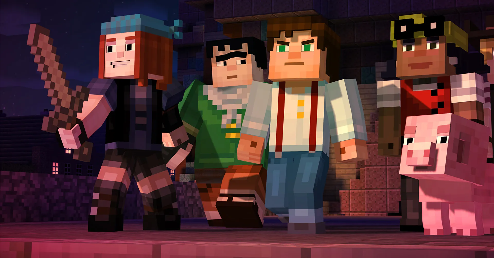

Question 7
In a team, what role do you naturally take on?
The supportive mentor ensuring everyone feels cared for
The determined problem-solver who never gives up
The reflective strategist navigating complex issues
The diligent collaborator working tirelessly for the group
Back
Next